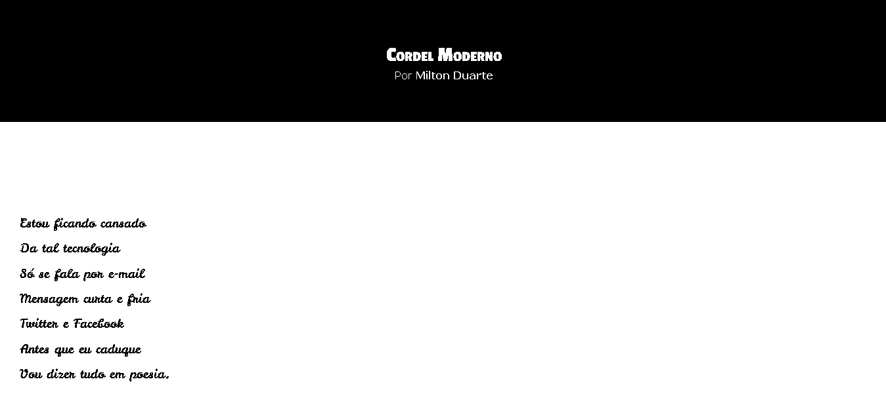

Cordel
Sobre o Projeto
Este projeto foi criado utilizando HTML e CSS.
O projeto exibe um poema de Milton Duarte de forma simples, com foco em tipografia, estrutura semântica e leitura fluida.
Imagem do Projeto

Tecnologias Utilizadas
- HTML5
- CSS3
- Git e GitHub
Conceitos praticados
- HTML semântico
- Estilos CSS(herança, especificidade, box model,...)
- DevTools e media queries
- Variaveis CSS